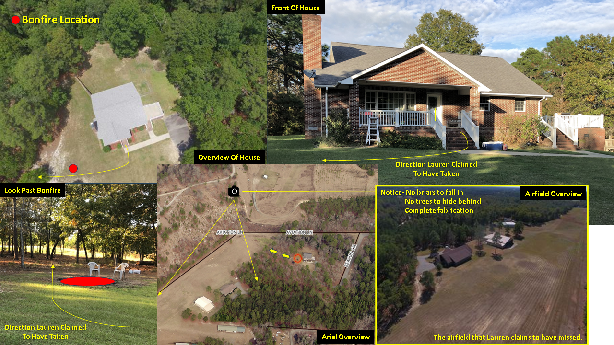
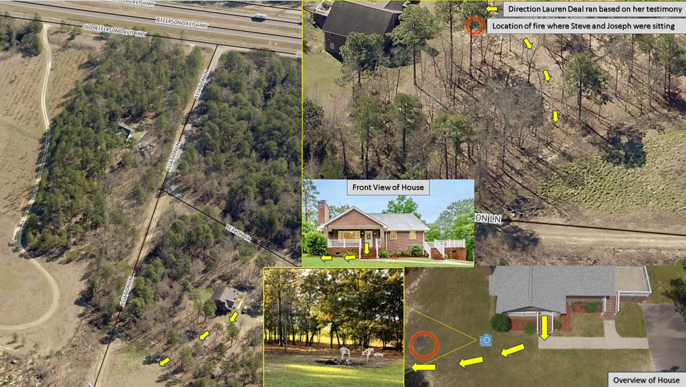
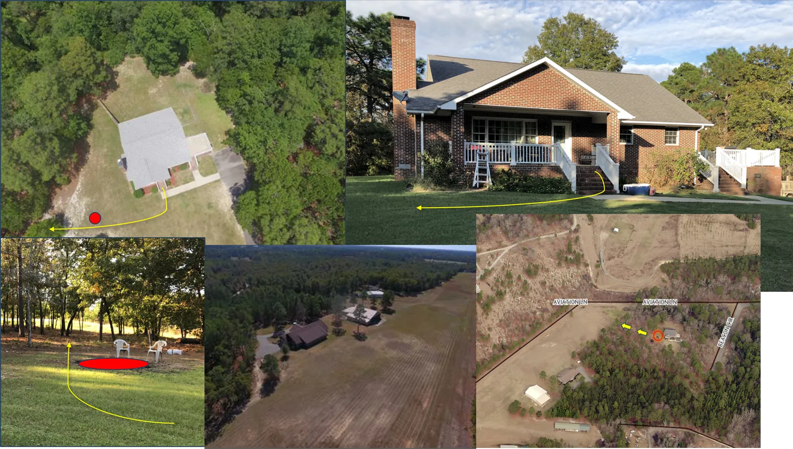

An Edifice of Lies
"Perjury is not a mistake - it is a strategy."
Where was Lauren Deal for over an hour?
This unexplained time gap is the precise reason the narrative of "running through the woods" was manufactured.
- Lauren Deal did not outrun two physically fit soldiers - she would have struggled to jog the length of a football field.
- Lauren Deal did not run in pitch-black darkness - as it wasn't pitch black that night.
- Lauren Deal did not hide behind any trees - she is too large and the trees are too small and sparse.
- Lauren Deal did not fall into any briar bushes - as there are none in the area she allegedly ran.
- Lauren Deal did not run toward the airfield without seeing it - it is clear and flat while being impossible to miss.
Photometric and radiometric data confirm 70% lunar illumination that evening—
amply sufficient for
navigation and general observation without artificial light.
Lunar Illumination & Nighttime Visibility
Photometric conditions at approximately 70% lunar illumination (Waxing/Waning Gibbous Phase)

Under a lunar illumination level of approximately 70%, the moon provides significant natural ambient light during nighttime hours. This corresponds to the waxing or waning gibbous phase, when most of the moon's surface reflects sunlight toward Earth.
In a non-urban outdoor environment—rural area or open field—this level allows clear visual orientation. A person with normal vision can discern large objects (trees, vehicles, people) at distances exceeding 50 feet, detect ground variations, and navigate without a flashlight.
Moonlight creates soft silvery contrast, reducing deep shadows. Facial recognition is possible at close range (~10–15 feet), while body silhouette, posture, movement, and high-contrast objects (e.g., light clothing) remain distinguishable farther away.
Complete darkness is overstated here: this illumination supports object detection, muted colors, and basic navigation in open terrain.
That is the irrefutable scientific fact of the matter. What follows is an examination of the information collected during the "investigation"
from a couple of key witnesses and the illogical contradictions that arise when their statements are compared against each other and the known conditions of that night.
Witness Claims & Immediate Contradictions
Phone Interview (DeMarco to Freeman): DeMarco claimed he saw Lauren running through a field near Route 1 while driving.
DeMarco: "She went farther. So that is when I went back to the fire and just thought about what I should do. Calm down. I was like.
I woke up I was I was just about to call the police and then you know I get I get afraid and I leave and then when I leave, I'm driving
down the road near Route 1 andI see her running through a field."
Trial Testimony (Lauren): She described running in “complete darkness,” unable to see where she was going, yet noted highway lights, a fence with barbed wire, and light posts on what she thought was Route 421 (actually ~10 miles away in the wrong direction). Prosecutor Bartholomew repeatedly confirmed “still dark” without probing how identifications occurred under those conditions.
Law Enforcement Interview (Lauren): She waved at an approaching car, recognized it was not Ben’s large truck, identified Joseph, saw him, knew he could see her (mutual visibility/eye contact), heard him pleading, and got in after he promised safety.
Red Flag: Darkness is invoked to explain disorientation and fear, yet vanishes for vehicle discrimination, driver identification, and mutual recognition.
Geographic & Directional Impossibility
Lauren Deal claimed that she ran “to the road” through darkness, woods, and briars. But the direction she described—away from U.S. Route 1—does not lead into woods and brush. It leads into a large, flat, open airfield with no apparent wooded cover, no dense undergrowth, no briars, and no concealed path.
To reach the road near Route 1, she would have had to reverse direction and run back toward the house. The investigation does not explain how that supposedly occurred, or how her description is consistent with the actual layout of the scene.
The roadway she appeared to reference was not in the direction she described. An open airfield under moonlight would also provide little concealment and does not naturally support a narrative of prolonged flight through woods and briars.
The physical geography materially undermines the escape narrative.
CORE CONTRADICTIONS — Mutually Exclusive Elements
The testimony requires all of these to be simultaneously true under ~70% moonlight in open terrain:
- • Utter/complete darkness → no navigation possible
- • Concealment in woods/trees/briars → hidden from view
- • Clear distinction of vehicle type/size (not a big truck)
- • Identification of specific driver (Joseph)
- • Mutual visibility & eye contact
- • Joseph spotting/waving at her from the highway while driving
Irreconcilable Physics: If darkness/concealment holds, identification collapses. If identification holds, darkness and concealment evaporate.
This is not trauma-induced confusion. These conditions cannot coexist.
Site Area Reference Images
Select any thumbnail to open the full-resolution image.

Multiple Views


Multiple Views
Multiple Views
Darkness as Selective Narrative Device
Darkness functions inconsistently:
- • Excuses disorientation, fear, and prolonged running through obstacles
- • Vanishes precisely when vehicle/driver recognition or signaling is needed
- • Reappears to justify hiding after identification
Vision toggles on/off as the story demands—selective sensory activation impossible in reality.
Vehicle identification is especially fatal: distinguishing truck vs. car requires sustained silhouette/size clarity. If possible, the open airfield/terrain would also be obvious, destroying claims of complete darkness and obstacle-filled flight.
Investigative & Prosecutorial Implications
Basic interviewing should flag narrative drift (early chaos/uncertainty → later moral clarity/linear rescue), lighting contradictions, behavior toggling (hiding vs. waving), and geographic impossibilities.
When ignored, options are limited:
- Noticed and overlooked
- Noticed and rationalized
- Questioning structured to avoid them
No passive explanation exists. This reflects conscious narrative management.
Physiological Implausibility
Lauren Deal was reported to be 5 feet 3 inches tall and approximately 180 pounds, which corresponds to a BMI of about 31.9. Video of that evening shows that she was stumbling and bouncing off chairs before she even left the bar. Her balance, coordination, reaction time, and endurance would already have been materially impaired from her obesity and alcohol consumption before any alleged flight began.
The current narrative nevertheless suggests that she sustained a substantial run and outran two soldiers who were required to maintain physical fitness. That claim is difficult to reconcile with ordinary physical expectations, particularly when considered alongside the video evidence of intoxication, smoking status, and her obesity from lack of physical activity.
Alcohol would be expected to further impair postural stability, gross motor control, and endurance. In practical terms, those combined factors would make sustained running over any meaningful distance—especially at night and across uneven terrain—substantially more difficult and raise serious questions about the physical plausibility of the account as described.
The claimed flight is difficult to reconcile with the alcohol impairment and physical condition of the witness.
The Forced Conclusion
The record does not show a merely imperfect memory. It shows a sequence that must be artificially maintained because its core parts do not naturally fit together.
The narrative requires mutually incompatible conditions to coexist: darkness and reliable observation, concealment and repeated visibility, disorientation and directional precision, physical impairment and sustained flight, an open airfield and a claimed path through woods and briars, and a route away from Route 1 that somehow still ends at the road near Route 1.
These are not minor discrepancies at the edges of an otherwise stable account. They go to the central mechanics of the story—where she ran, what she could see, how she moved, what terrain existed, and whether the events could have unfolded in the manner claimed. Once those core features are tested against the physical layout and the reported condition of the witness, the account stops reading like an organic sequence of events and begins reading like a narrative preserved despite contradiction.
Material inconsistencies in visibility, location, physical condition, identity, behavior, direction, and sequence cannot all be true at the same time. The investigation and prosecution did not resolve those conflicts with objective reconstruction. Instead, the record reflects a theory that survives only if the contradictions are ignored, minimized, or absorbed without explanation.
When a narrative demands darkness and precise vision, concealment and recognition, impairment and endurance, and an open illuminated field masquerading as woods and briars, it does not describe reality tested by evidence. It describes a conclusion forced onto facts that do not support it.
False Story Diagram
Interactive view of the False Story diagram.